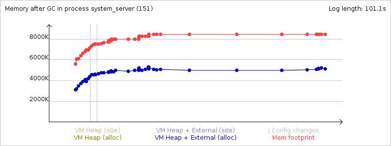

Mem info from 'meminfo' service:
** MEMINFO in pid 151 [system] **
native dalvik other total
size: 14692 8647 N/A 23339
allocated: 12246 5558 N/A 17804
free: 141 3089 N/A 3230
(Pss): 3028 4687 18237 25952
(shared dirty): 728 1360 4944 7032
(priv dirty): 3000 1408 13972 18380
Objects
Views: 0 ViewRoots: 0
AppContexts: 1 Activities: 0
Assets: 6 AssetManagers: 6
Local Binders: 100 Proxy Binders: 153
Death Recipients: 65
OpenSSL Sockets: 0
SQL
heap: 291 MEMORY_USED: 291
PAGECACHE_OVERFLOW: 92 MALLOC_SIZE: 50
DATABASES
pgsz dbsz Lookaside(b) Dbname
1 19 71 accounts.db
1 27 72 settings.db
1 221 18 yellowpage.db
Asset Allocations
zip:/system/app/GoogleServicesFramework.apk:/resources.arsc: 1555K
Memory usage from GC system logs:
Memory usage from GC event logs: